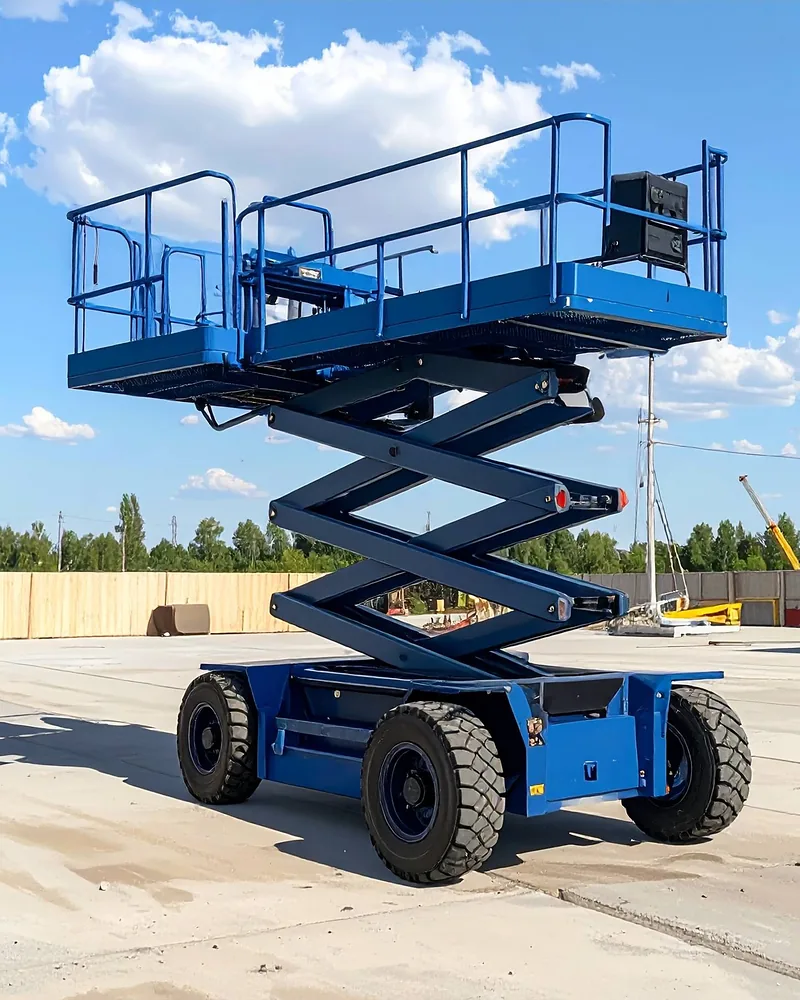
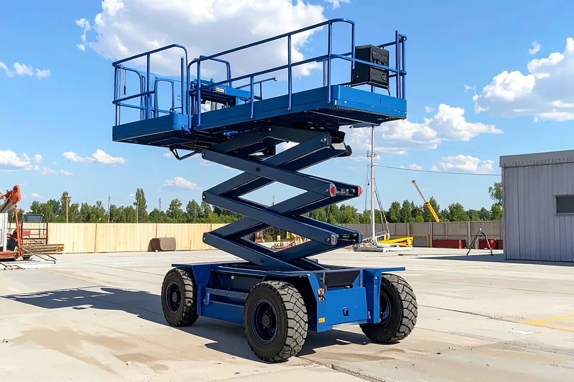
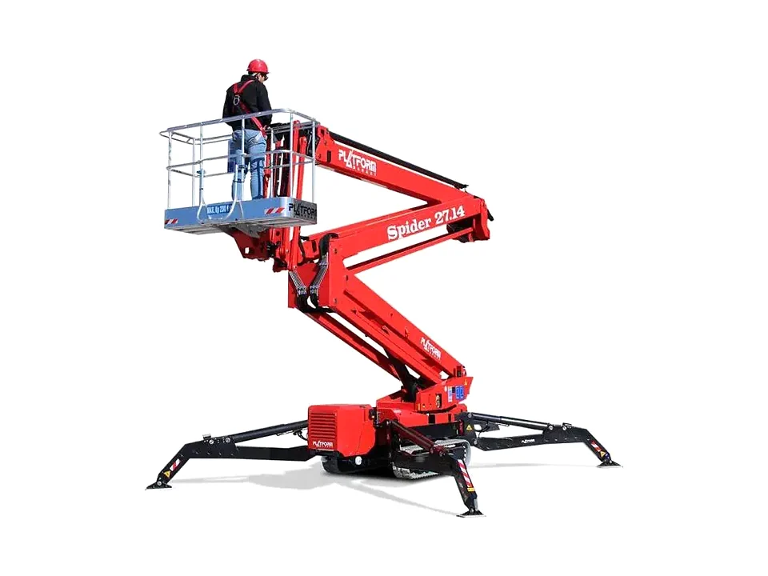
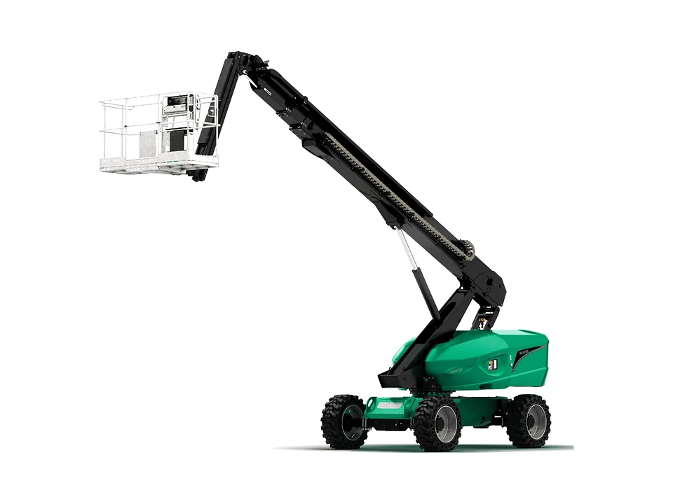
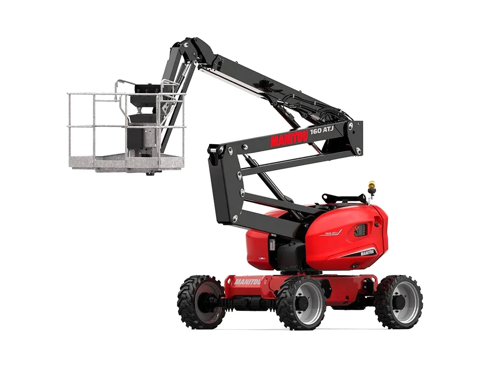
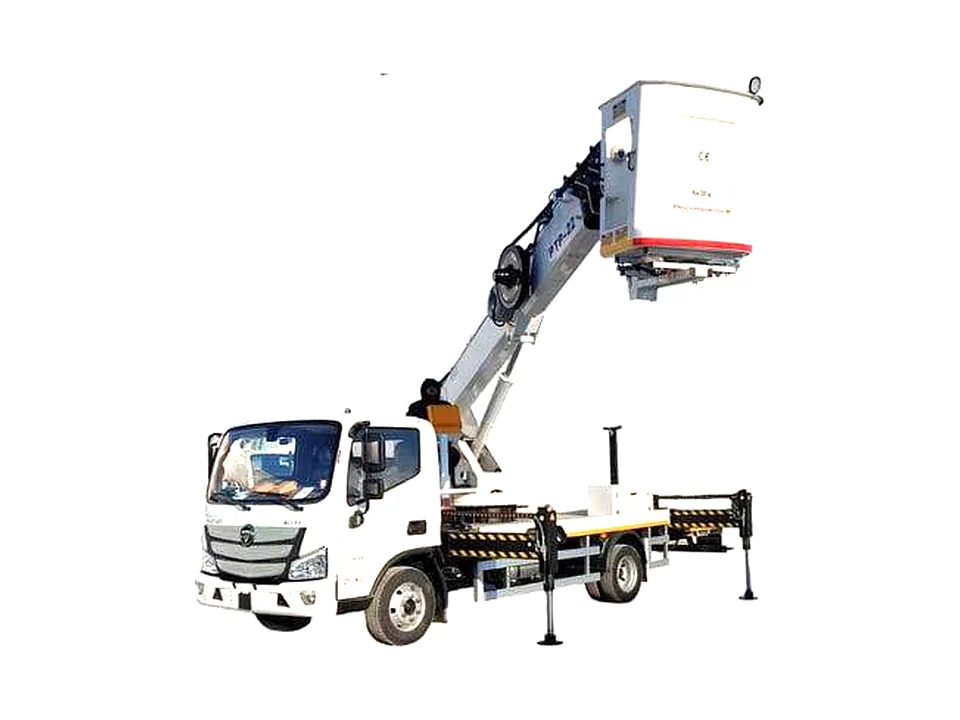
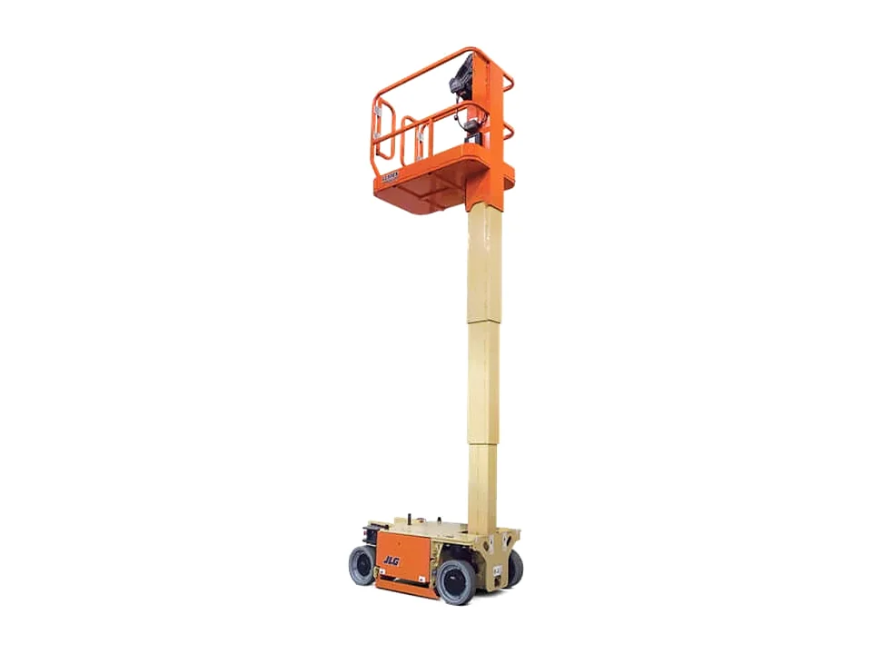
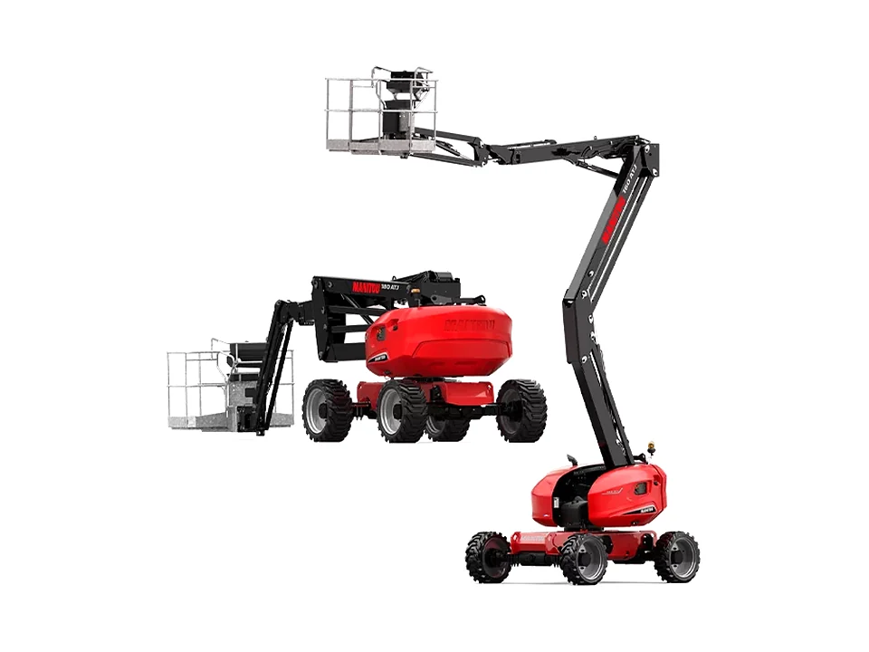

Formation sécurité complète
De l’identification des risques aux bons comportements en situation de travail.
Formation professionnelle
Développez les compétences nécessaires pour utiliser les nacelles élévatrices de manière sûre, efficace et responsable dans un environnement professionnel.

01À propos
Notre formation nacelles élévatrices est conçue pour répondre aux exigences professionnelles et aux règles de sécurité applicables à l’utilisation de ces équipements.
Elle s’adresse aux opérateurs souhaitant acquérir ou perfectionner leurs compétences dans l’utilisation sécurisée des nacelles élévatrices.
02Objectifs
À l’issue de cette formation, les participants seront capables de manipuler les nacelles élévatrices en respectant les règles de sécurité, d’identifier les risques associés et de mettre en œuvre les mesures préventives adaptées.
Résultats clés
03Public cible
Cette formation s’adresse aux opérateurs, techniciens de maintenance, personnel d’entretien et à toute personne amenée à utiliser des nacelles élévatrices dans le cadre de son activité professionnelle.
04Points forts
De l’identification des risques aux bons comportements en situation de travail.
Un accompagnement par des formateurs expérimentés, au plus près des réalités du terrain.
Les notions théoriques sont associées à une mise en pratique.
Un contenu pensé pour l’utilisation des nacelles en environnement professionnel.
05Programme
Une progression pédagogique conçue pour associer connaissances théoriques, prévention des risques et mise en pratique.
Les notions de base et le cadre réglementaire applicable à l’utilisation des nacelles élévatrices.
Ciseaux, araignée, télescopique, articulée, sur camion, verticale, automotrice : reconnaître chaque type de nacelle et ses usages.
Identifier les risques associés à l’utilisation des nacelles et mettre en œuvre les mesures préventives adaptées.
Les vérifications nécessaires à réaliser avant de mettre une nacelle en service.
Prise en main de l’équipement et exécution des manœuvres dans le respect des règles de sécurité.
Positionner correctement la nacelle et travailler en hauteur en toute sécurité.
Les réflexes et les procédures à connaître en cas d’incident ou de situation d’urgence.
Une évaluation théorique et une mise en situation pratique pour vérifier les acquis.
06Types de nacelles
Chaque nacelle répond à des contraintes de travail spécifiques. Découvrez leurs caractéristiques, leurs usages et leurs principales différences.

01 / 07
Idéale pour les travaux nécessitant une plateforme de travail stable et sécurisée, la nacelle ciseaux offre une élévation exclusivement verticale. Elle convient parfaitement aux interventions en intérieur comme en extérieur sur des surfaces planes.

02 / 07
Grâce à ses chenilles et à ses stabilisateurs, la nacelle araignée accède facilement aux zones difficiles d’accès. Sa conception compacte permet d’intervenir efficacement sur des terrains irréguliers ou dans des espaces restreints.

03 / 07
Conçue pour atteindre de grandes hauteurs et offrir une portée horizontale importante, la nacelle télescopique est idéale pour les travaux nécessitant un accès éloigné tout en garantissant précision et stabilité.

04 / 07
Dotée d’un bras articulé, cette nacelle permet de contourner les obstacles et d’accéder aux zones les plus complexes. Une solution adaptée aux environnements exigeants.

05 / 07
Alliant mobilité et performance, la nacelle sur camion est idéale pour les interventions rapides nécessitant des déplacements fréquents entre plusieurs sites de travail.

06 / 07
Compacte, légère et facile à manœuvrer, la nacelle verticale est parfaitement adaptée aux travaux en intérieur et aux interventions dans les espaces les plus exigus.

07 / 07
Grâce à son système de propulsion intégré, la nacelle automotrice peut se déplacer tout en restant en hauteur. Elle améliore la productivité sur les chantiers nécessitant de nombreux déplacements.
07Méthode
Les notions essentielles : règles de sécurité, risques et bonnes pratiques d’utilisation.
Le formateur montre les gestes, les vérifications et les manœuvres à maîtriser.
Les participants mettent en application les gestes et les consignes de sécurité.
Une évaluation théorique et une mise en situation pratique vérifient les acquis.
08Évaluation et validation
Les connaissances et compétences acquises sont vérifiées au moyen d’une évaluation théorique et d’une mise en situation pratique.
À l’issue de la formation, les résultats de l’évaluation permettent de valider les compétences acquises conformément au parcours suivi.
09Wisy Safety
Une formation ancrée dans les situations réelles de travail en hauteur.
Des formateurs qui connaissent les équipements et leurs contraintes d’utilisation.
La prévention des risques guide chaque étape du programme.
Une équipe à l’écoute pour préciser votre besoin et organiser la formation.
Théorie, démonstration et mise en pratique pour ancrer les bons réflexes.
Une formule adaptée à votre activité et à vos collaborateurs.
Témoignages
[Témoignage à renseigner]
[Témoignage à renseigner]
[Témoignage à renseigner]
10FAQ
Une autre question ? Notre équipe vous répond. Nous contacter
Aux opérateurs, aux techniciens de maintenance, au personnel d’entretien et à toute personne amenée à utiliser des nacelles élévatrices dans le cadre de son activité professionnelle.
La formation s’adresse aux opérateurs souhaitant acquérir ou perfectionner leurs compétences dans l’utilisation sécurisée des nacelles élévatrices. Pour connaître d’éventuels prérequis, contactez notre équipe.
Oui. La formation associe théorie et pratique, et l’évaluation comprend une mise en situation pratique.
En français, en néerlandais et en anglais.
Wisy Safety adapte la formation aux besoins de votre entreprise. Contactez notre équipe pour définir ensemble la formule adaptée à votre activité et à vos collaborateurs.
Utilisez le bouton « Demander une formation » ou contactez-nous par téléphone au +32 2 318 86 59 ou par e-mail à info@wisysafety.be. Nous vous indiquerons les disponibilités.
Demander une formation
Échangez avec notre équipe afin de trouver une formule adaptée à vos besoins, à votre activité et à vos collaborateurs.
Type de nacelle